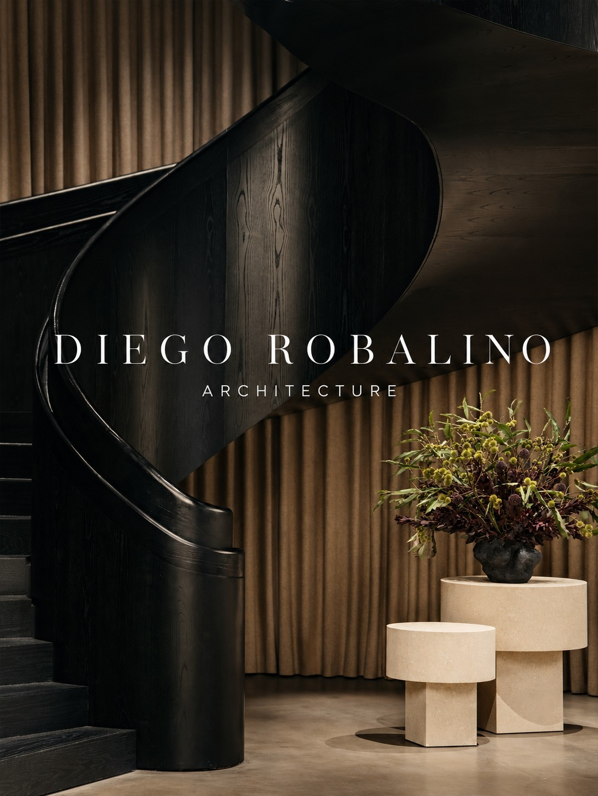

Arquitectura · Interiores · DiseñoEl arte de
El arte de
habitar bien.
La luz, la materia y el espacio.
Una nueva perspectiva para tu próxima idea.
DIEGO ROBALINO
ARCHITECTUREDesliza para descubrir ↓
ARCHITECTUREDesliza para descubrir ↓

Espacios con intenciónArquitectura que se sienteDiseño en cada detalle
01 / ExploracionesUna mirada
Una mirada
al espacio.
Galería de conceptos para esta muestra web.
Las imágenes no representan obras ejecutadas por el estudio.
Materia y luz
Interiores / Referencia 02El espacio comienza
con una conversación.
¿Cómo quieres vivir? ¿Qué necesita tu espacio? Este es un lugar para imaginar las posibilidades y dar forma a una propuesta propia.
Hablemos de tu idea ↗LUZ NATURALTEXTURAS HONESTASFORMAS EN EQUILIBRIO
03 / PosibilidadesDe la intención
De la intención
a la forma.
Servicios propuestos para este prototipo.
El alcance final se define con el estudio.
01Diseño arquitectónico+
Concepto, distribución y una exploración de cómo conectar el espacio con su entorno y con las personas que lo habitan.
02Diseño de interiores+
Una mirada conjunta a los materiales, la iluminación y el mobiliario para crear ambientes coherentes.
03Remodelaciones+
Explorar el potencial de un espacio existente y conversar sobre sus nuevas posibilidades de uso.